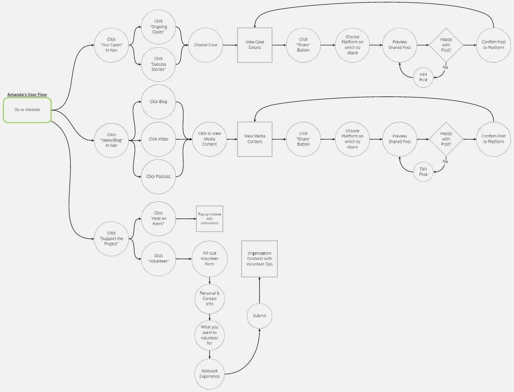
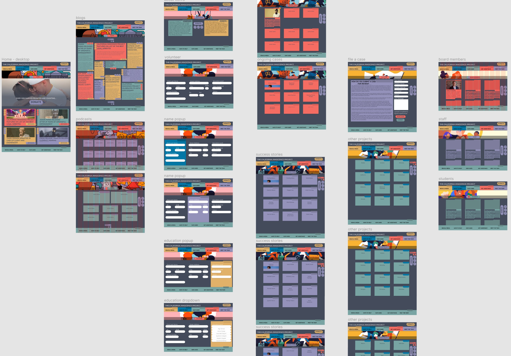

Helping a Non-Profit Harness the Power of Social Media
February 2021
Team:
Henry Bradley
Leonardo Canchola
Danielle Heflin
Nick So
Tools:
Miro
Figma
Trello
Google Drive
Zoom
My Role:
- Project Management:
Task Assignment & Tracking - UX Research:
Empathy Map
Competitor Analysis
Definitions - UX Design:
User Flows
Sitemap
Prototype Contribution
Overview
Problem
The California Innocence Project's web presence needs an update in order to spark interest in modern activists.
- The website's layout and aesthetics are bloated and dated
- The organization does not use social media to increase awareness of their cause
- Donation options are limited and volunteer opportunities are too exclusive
Goal
Improve the site to make it easier for users to spread the word and start grassroots movements.
- Create a contemporary aesthetic that speaks to young acitivists
- Improve social media integration to encourage users to share their support
- Generate more monetary donations and volunteers for CIP
User Research
Research Plan
Interviews
- Individuals affected by unjust incarceration
- People aged 20-30 to gauge general knowledge of unjust incarceration and similar topics
- We attempted to interview a stakeholder from the organization, but did not hear back
Survey
for Quantitative DataInsights
- Respondents believe that some wrongful convictions are an unavoidable side effect of a working justice system, but the current rate is too high
- More than half of respondents believe that prison sentences are often too harsh
- Those affected by alleged wrongful convictions felt the justice system was weighed against them or that they were poorly represented in court
- 100% of respondents think that donating money, raising awareness, and seeking legal aid are the most effective ways to help those affected by wrongful convictions - however, none knew where or how to go about doing so.
Ideation and Definition
Competitor Analysis
One of our first steps was to determine how the CIP stacks up against other not-for-profit organizations.

We were surprised to find that the CIP's website actually is one of the more usable non-profit sites. However, the site still has its problems and there are many dated designs which are in dire need of an update to make the user experience more pleasant.
Redesigning the Site Map
Since CIP's website content is fairly robust, we decided to focus on the presentation of the content. As you can see in the gif below, the site's navigation is quite bloated and poorly organized.
By changing the header labels, reducing the amount of links, and reordering the content, we made the site's navigation more concise and intuitive.

User Flows
Lastly, we defined the user flows for two of the most common User Personas determined by our research.

George, a well-informed donor, has multiple paths to donating and can easily set up recurring donations.

Amanda, a passionate activist with little money to spare, can easily share content on her social media profiles and find opportunities to volunteer.
Prototyping and Iteration
Wireframing
Based on the new sitemap and user flows, we began wireframing the new site

We started with a mobile-first approach, but pivoted to a responsive design for the main prototypes because we found that users were more likely to view the site on a desktop.
Hi-Fidelity Prototype
After a few rounds of user tests, we created the final prototype with a heavy focus on social media sharing.
We chose a dark background and vibrant color palette in order to appeal to young activists and to make the organization feel less "corporate".
The Final Prototype
Conclusion
Reflection
An organization like CIP can and should harness the power of social media to further its cause. Whether they speak directly to their community, or simply let others spread the word for them - the end result is an amplified voice that can ripple out beyond their current reach and the effects have the potential to shift public outlook entirely. Combine that push for increased social media presence with an updated look and a sleek experience that speaks to young activists and you have a recipe for real social change.
Direction
Next Steps:
- More user research!
- What content resonates?
- What do people want to share?
- Any more resources people want/need?
- Fully-responsive prototype